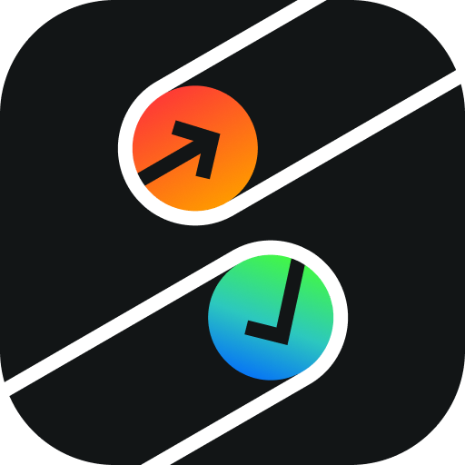

КАРТОЧКА ЗАДАЧИ
Задача
Нет подзадач
Дата
ВремяНе указано
ПовторНе повторяется

Lets TodoРАБОЧЕЕ ПРОСТРАНСТВО
ЕЖЕДНЕВНЫЙ РИТМ
НАСТРОЙКИ
Задачи и привычки передаются напрямую в вашей Wi-Fi-сети без облачных серверов.
Откройте Lets Todo на телефоне и отсканируйте QR-код или введите одноразовый код.
Проверяем локальную сеть…ОДНОРАЗОВЫЙ КОД
—Адрес в локальной сети:Передача начинается только после подтверждения кода на обоих устройствах. Сеанс шифруется, а предложение подключения автоматически истекает.
Здесь появятся только устройства, которые действительно прошли сопряжение.
ПРИЛОЖЕНИЕ
Текущая версия: —
ПРОФИЛЬ
Личный обзор рабочего ритма
АНАЛИТИКА